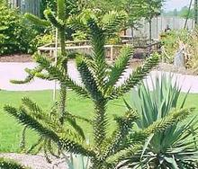
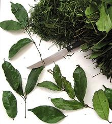
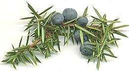
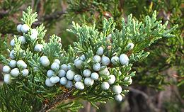
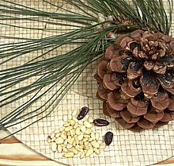
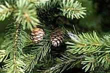

SAFARI
Users
Varieties
Araucaria
 [genus Araucaria of family Araucariaceae]
These are the southern hemisphere equivalent of pines, but are related to the northern hemisphere pines only at the order level Pinales. A few species, particularly the Monkey Puzzle A. araucana of Brazil and Chile and the Bunya-bunya A. bidwillii of Eastern Australia are harvested to yield seeds often called "pine nuts" even though Araucaria are not actually pines.
The photo shows the densely needled habit of these trees which are
now widely planted as ornamentals in the northern hemisphere from which
they have been absent since the demise of the dinosaurs about 65
million years ago.
Ukazi / Afang
 [Eru, African Jointfir (English); Okazi, Ukazi (Igbo); Afang (Ibibio); Eru, Okok, M'fumbua, Fumbua (Camaroon); KoKo (Angola, Gabon, Central African Republic, Congo); M'fumbua or Fumbua Democratic Republic of Congo; Gnetum africanum]
Despite being a leafy vine, this plant is actually a conifer, related
to Pines and Firs. The leaves are much eaten in West Africa,
particularly Nigeria. They are all but inedible; tough, glossy, and have
no flavor except for a slight bitterness. On the other hand, they are
quite nutritious with a good protein suite, and are strongly medicinal.
They must be finely shredded and or shredded and ground for cooking,
which is often done by vendors in the markets. They are used in Afang
and Okazi/Ukazi soups, as well as some other vegetable soups. The seeds
can also be cooked and eaten. The root tubers are used as a famine food
similarly to yams.
Photo by T.K. Naliaka distributed under license
Creative Commons
Attribution-ShareAlike v4.0 International.
Junipers
[genus Juniperus of family Cupressaceae (cypress)] Junipers, ranging from tiny shrubs to medium size trees, are found throughout the Northern Hemisphere in some 50 to 67 species (depending on which botanist you wish to believe). Some have short needles and others have their twigs covered with tiny triangular scale-like leaves. A number bear cones that can be used for flavoring, two of which are described here. The female cones are comprised of just a few fleshy scales which are fused together to resemble berries.
Common Juniper [Juniperus. communis] This cold climate shrub or small tree is native from Alaska across
Camada to Nova Scotia, but only in scattered places in the United
States. It is also native from northeastern Span through Central
Europe and across Siberia to Japan. There are scattered populations
in Italy, Greece, northern Anatolia, the Caucasus and the Himilayas.
It provides the juniper "berries" of commerce and those used to flavor
most gin. The leaves are moderate length needles and the three fleshy
scales of the cones are fused together to resemble a berry. These
cones are too bitter to eat raw and are generally sold dried for use
as a flavoring. They should be crushed when used to release the
flavors.
Photo by MPF distributed under license
Cretive commons
Attribution-ShareAlike 3.0 Unmported.
Eastern Juniper [Eastern Redcedar, Juniperus. virginiana] Often just a shrub at the edges of its range, this juniper can be a
tree large enough to cut for lumber in the Southeastern USA. It is
native from Nebraska to southern Maine, and south to Georgia,
but avoids the coast in its southern range. It is planted as a
decorative in many other parts of the United States. This is a "scale
leafed" juniper with twigs covered in tiny triangular green leaves,
but juvenile plants have short needles which may also appear on shaded
twigs of mature plants. The scales of the cones are fleshy and fused
into a "berry" as with the Common Juniper but the cones are lumpier
in shape and covered with a white wax which makes them a sky blue
color. As with the Common Juniper these cones are used to flavor
gin but are not commonly sold as a commercial spice.
Photo by Quadell distributed under license
Gnu Free Document License v1.2 or later.
|
Pines
 [genus Pinus of family Pinaceae (pines)]
Pine nuts (officially a seed, not a nut) have been eaten since prehistoric times in Europe, Asia and North America. Today the sweet resinous seeds are somewhat costly and used mostly as a flavoring ingredient but Italian pesto sauce is often based on pine nuts (other nuts are also used).
Pine nuts from a number of species are available. In Europe it's mostly the Stone Pine (Pinus pinea) and in Asia the Korean Pine (Pinus koraiensis) and Chilgoza Pine (Pinus gerardiana). Siberian Pine (Pinus sibirica) and a number of other varieties are also used. In North America seeds of various species of Pinon pines (subgenus Ducampopinus) are harvested.
The soft layer between pine bark and the wood is also edible and has
been used as a famine food. Pine needles are sometimes used as a
flavoring. For more details and culinary usage, see out page
Pines & Pine Nuts page.
Spruce
 [genus Picea of family Pinaceae]
The many species of spruce are of great economic importance throughout
the Northern Hemisphere for lumber, paper making and as Christmas trees,
but have little culinary application. Buds and needles of young growth are
used as a flavoring, mainly for beer in areas too far north for hops to
grow, and sap of a few species is used locally to make a gum. The photo
shows foliage and cones of Red Spruce (P. rubens), one of the species
used to make spruce beer. Photo USDA (public domain).